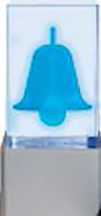

dispositif d'alarme visuelle (DAV)
Dispositif lumineux situé sur le dessus de l'instrument permettant, grâce à différents codes couleurs, d'afficher l'état de fonctionnement de l'instrument ou du logiciel. Ce système permet de minimiser les temps d'indisponibilité de l'instrument en alertant plus rapidement l'utilisateur lorsque l'instrument nécessite une action humaine.
